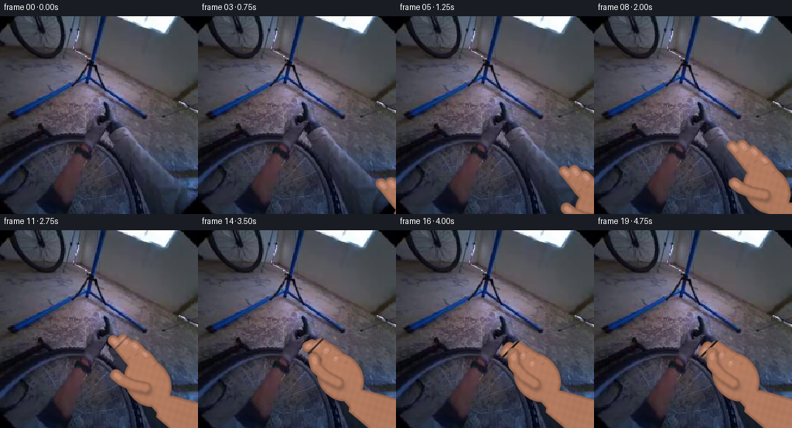
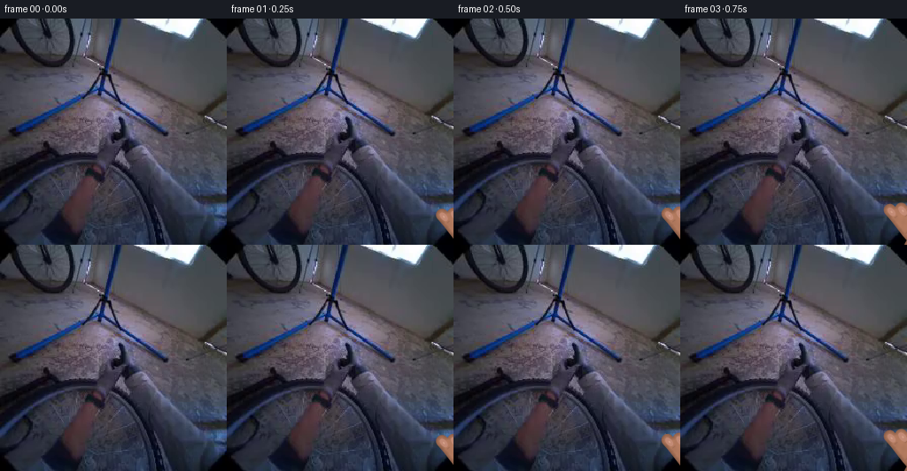

CODING AGENTS AS PIXEL WORLD MODELS
traex/GPT-5.6-Sol · common50_0023
点击播放 · 原生 RGB 像素
逐轮保存的候选
回放视频、检查图与代码变化。
每份候选均可单独播放。实际图片检查记录在下方工具轨迹中。
候选 01播放与检查图
点击播放 · 原生 RGB 像素
展开代码变化
--- 上一保存版本
+++ 本次保存版本
@@ -0,0 +1,251 @@
+from pathlib import Path
+import math
+import cv2
+import numpy as np
+from PIL import Image
+import artifact_io
+
+CASE_DIR = Path(__file__).resolve().parent
+W = H = 256
+S = 4
+rng = np.random.default_rng(231904)
+
+
+def smoothstep(x):
+ x = float(np.clip(x, 0.0, 1.0))
+ return x * x * (3.0 - 2.0 * x)
+
+
+def pts_scaled(points):
+ return np.round(np.asarray(points, np.float32) * S).astype(np.int32)
+
+
+def blank_hi():
+ return np.zeros((H * S, W * S), np.uint8)
+
+
+def capsule(mask, points, width):
+ """A softly jointed, round-ended polyline, rendered oversize for AA."""
+ p = pts_scaled(points)
+ if len(p) >= 2:
+ cv2.polylines(mask, [p], False, 255, max(1, round(width * S)), cv2.LINE_AA)
+ radius = max(1, round(width * S / 2))
+ for q in p:
+ cv2.circle(mask, tuple(q), radius, 255, -1, cv2.LINE_AA)
+
+
+def ellipse(mask, center, axes, angle):
+ c = tuple(np.round(np.asarray(center) * S).astype(int))
+ a = tuple(np.round(np.asarray(axes) * S).astype(int))
+ cv2.ellipse(mask, c, a, angle, 0, 360, 255, -1, cv2.LINE_AA)
+
+
+def down(mask):
+ return cv2.resize(mask, (W, H), interpolation=cv2.INTER_AREA).astype(np.float32) / 255.0
+
+
+def over(image, color, alpha):
+ a = np.clip(alpha, 0, 1)[..., None]
+ return image * (1.0 - a) + color * a
+
+
+def textured_skin(mask, frame_no, offset, warmth=1.0):
+ """Build matte skin with edge subsurface shading and fixed fine texture."""
+ binary = (mask > 0.12).astype(np.uint8)
+ dist = cv2.distanceTransform(binary, cv2.DIST_L2, 5)
+ edge = 0.72 + 0.28 * np.clip(dist / 5.0, 0, 1)
+ yy, xx = np.mgrid[0:H, 0:W]
+ # The upper-left environmental light catches knuckles and finger ridges.
+ broad = 1.0 + 0.055 * ((220 - yy) / 220.0) - 0.025 * ((xx - 150) / 110.0)
+ ox, oy = offset
+ pores = (np.sin((xx - ox) * 0.71 + (yy - oy) * 0.19) +
+ np.sin((xx - ox) * 0.17 - (yy - oy) * 0.53)) * 0.010
+ # Low-frequency mottling prevents a flat synthetic fill.
+ noise = rng.normal(0, 1, (32, 32)).astype(np.float32)
+ noise = cv2.resize(noise, (W, H), interpolation=cv2.INTER_CUBIC)
+ noise = cv2.GaussianBlur(noise, (0, 0), 1.3) * 0.012
+ lum = np.clip(edge * broad + pores + noise, 0.62, 1.15)
+ base = np.array([181.0, 124.0, 96.0])
+ color = base[None, None, :] * lum[..., None]
+ # Warm translucency is strongest along the silhouette.
+ color[..., 0] += (1.0 - edge) * 12.0 * warmth
+ color[..., 2] -= (1.0 - edge) * 4.0
+ return np.clip(color, 0, 255)
+
+
+def cast_shadow(frame, alpha, dx=3, dy=4, strength=0.35, sigma=3.2):
+ shifted = np.zeros_like(alpha)
+ y0, y1 = max(0, dy), min(H, H + dy)
+ x0, x1 = max(0, dx), min(W, W + dx)
+ shifted[y0:y1, x0:x1] = alpha[y0-dy:y1-dy, x0-dx:x1-dx]
+ shifted = cv2.GaussianBlur(shifted, (0, 0), sigma)
+ return over(frame, np.array([13., 15., 18.])[None, None, :], shifted * strength)
+
+
+def transform(points, offset):
+ p = np.asarray(points, np.float32).copy()
+ p[:, 0] += offset[0]
+ p[:, 1] += offset[1]
+ return p
+
+
+def blend_paths(a, b, t):
+ return np.asarray(a, np.float32) * (1.0 - t) + np.asarray(b, np.float32) * t
+
+
+def component_skin(frame, alpha, frame_no, offset, shadow=False):
+ if shadow:
+ frame = cast_shadow(frame, alpha, 2, 3, 0.25, 2.0)
+ return over(frame, textured_skin(alpha, frame_no, offset), alpha)
+
+
+def render_hand(background, frame_no):
+ # Reach lasts a little over three seconds; fingers close only at contact.
+ reach = smoothstep((frame_no - 1.2) / 11.8)
+ close = smoothstep((frame_no - 10.0) / 6.2)
+ settle = smoothstep((frame_no - 15.0) / 3.0)
+ offset = np.array([(1.0 - reach) * 105.0, (1.0 - reach) * 88.0], np.float32)
+ if frame_no >= 14:
+ # A tiny, damped human adjustment after making contact.
+ amp = 1.0 - 0.72 * settle
+ offset += np.array([math.sin(frame_no * 1.45) * 0.75 * amp,
+ math.cos(frame_no * 1.17) * 0.55 * amp])
+
+ # Final hand skeleton. The hand points up-left from an egocentric wrist.
+ open_paths = [
+ [[175, 178], [158, 159], [145, 142], [138, 134]],
+ [[183, 174], [168, 154], [157, 140], [151, 133]],
+ [[191, 177], [181, 158], [171, 146], [165, 140]],
+ [[198, 184], [192, 168], [184, 157], [178, 151]],
+ ]
+ closed_paths = [
+ [[175, 178], [160, 160], [147, 151], [142, 158]],
+ [[183, 176], [170, 158], [158, 150], [151, 158]],
+ [[191, 181], [180, 164], [168, 156], [163, 165]],
+ [[198, 188], [190, 173], [180, 166], [175, 175]],
+ ]
+ widths = [13.3, 14.0, 13.0, 11.2]
+ finger_paths = [transform(blend_paths(a, b, close), offset)
+ for a, b in zip(open_paths, closed_paths)]
+
+ # Arm, palm and four back fingers are one continuous silhouette.
+ body_hi = blank_hi()
+ arm = transform([[258, 219], [258, 263], [220, 257], [194, 235],
+ [196, 216], [214, 207]], offset)
+ cv2.fillPoly(body_hi, [pts_scaled(arm)], 255, cv2.LINE_AA)
+ ellipse(body_hi, np.array([183, 190]) + offset, (28, 34), -39)
+ # Broad heel of the hand links palm and wrist without an hourglass seam.
+ capsule(body_hi, transform([[205, 220], [194, 207], [184, 191]], offset), 28)
+ for path, width in zip(finger_paths, widths):
+ capsule(body_hi, path, width)
+ body_a = down(body_hi)
+
+ frame = background.astype(np.float32)
+ frame = cast_shadow(frame, body_a, 3, 4, 0.38, 3.0)
+ frame = component_skin(frame, body_a, frame_no, offset)
+
+ # Knuckle folds and finger separations, kept subtle and clipped to skin.
+ crease_hi = blank_hi()
+ for path, width in zip(finger_paths, widths):
+ p = np.asarray(path)
+ for j, frac in ((1, 0.20), (2, 0.13)):
+ if j >= len(p) - 1:
+ continue
+ tangent = p[j + 1] - p[j - 1]
+ tangent /= max(1e-5, np.linalg.norm(tangent))
+ normal = np.array([-tangent[1], tangent[0]])
+ q = p[j]
+ a = q - normal * width * frac
+ b = q + normal * width * frac
+ cv2.line(crease_hi, tuple(np.round(a*S).astype(int)),
+ tuple(np.round(b*S).astype(int)), 210, max(1, S), cv2.LINE_AA)
+ crease = down(crease_hi) * body_a
+ frame = over(frame, np.array([104., 63., 55.])[None, None, :], crease * 0.24)
+
+ # Fingernails on the dorsal/side-facing tips; closing fingers progressively
+ # foreshorten them, which helps communicate the curl around the spoke.
+ nail_hi = blank_hi()
+ nail_centers = []
+ for idx, (path, width) in enumerate(zip(finger_paths, widths)):
+ p = np.asarray(path)
+ d = p[-1] - p[-2]
+ angle = math.degrees(math.atan2(d[1], d[0]))
+ center = p[-1] * 0.72 + p[-2] * 0.28
+ length = width * (0.42 - 0.08 * close)
+ short = width * 0.25
+ ellipse(nail_hi, center, (length, short), angle)
+ nail_centers.append((center, angle, length, short))
+ nail_a = down(nail_hi) * body_a
+ nail_color = np.zeros((H, W, 3), np.float32)
+ nail_color[:] = [199, 143, 124]
+ frame = over(frame, nail_color, nail_a * 0.78)
+ # Small moist highlights on nails.
+ shine_hi = blank_hi()
+ for center, angle, length, short in nail_centers:
+ d = np.array([math.cos(math.radians(angle)), math.sin(math.radians(angle))])
+ c = center - d * length * 0.16 + np.array([-0.5, -0.7])
+ ellipse(shine_hi, c, (max(1.1, length * .23), max(.7, short * .19)), angle)
+ shine = down(shine_hi) * nail_a
+ frame = over(frame, np.array([244., 198., 174.])[None, None, :], shine * 0.40)
+
+ # The selected black spoke follows the detected radial geometry from the
+ # wheel hub near (108,194) toward its upper-right rim. Only redraw its
+ # occluded portion: it lies in front of curled fingers and behind the thumb.
+ spoke_hi = blank_hi()
+ p0 = np.round((np.array([130., 172.]) + offset * 0.02) * S).astype(int)
+ p1 = np.round((np.array([167., 135.]) + offset * 0.02) * S).astype(int)
+ cv2.line(spoke_hi, tuple(p0), tuple(p1), 255, 2*S, cv2.LINE_AA)
+ spoke = down(spoke_hi) * body_a * (0.25 + 0.75 * close)
+ frame = over(frame, np.array([8., 10., 13.])[None, None, :], spoke * 0.94)
+ # Narrow metallic/rubber edge reflection on the spoke.
+ edge_hi = blank_hi()
+ cv2.line(edge_hi, tuple(p0 + np.array([-2, -2])), tuple(p1 + np.array([-2, -2])),
+ 255, max(1, S//2), cv2.LINE_AA)
+ spoke_edge = down(edge_hi) * body_a * close
+ frame = over(frame, np.array([82., 84., 86.])[None, None, :], spoke_edge * 0.35)
+
+ # Thumb starts open below the palm and closes over the spoke, producing a
+ # readable opposition grip. It is a separate foreground layer by design.
+ thumb_open = [[180, 197], [163, 194], [149, 188], [141, 182]]
+ thumb_closed = [[180, 198], [164, 187], [153, 174], [152, 159]]
+ thumb_path = transform(blend_paths(thumb_open, thumb_closed, close), offset)
+ thumb_hi = blank_hi()
+ capsule(thumb_hi, thumb_path, 14.5)
+ thumb_a = down(thumb_hi)
+ frame = component_skin(frame, thumb_a, frame_no, offset, shadow=True)
+
+ # Thumb nail and a contact shadow where thumb pad presses the spoke.
+ tp = np.asarray(thumb_path)
+ td = tp[-1] - tp[-2]
+ tang = math.degrees(math.atan2(td[1], td[0]))
+ tn_hi = blank_hi()
+ tc = tp[-1] * .72 + tp[-2] * .28
+ ellipse(tn_hi, tc, (5.0, 3.0), tang)
+ tn = down(tn_hi) * thumb_a
+ frame = over(frame, np.array([205., 147., 127.])[None, None, :], tn * .72)
+
+ if close > 0:
+ contact_hi = blank_hi()
+ cp = tuple(np.round((np.array([151.5, 158.0]) + offset) * S).astype(int))
+ cv2.ellipse(contact_hi, cp, (round(4.2*S), round(1.4*S)), -43, 0, 360,
+ 255, -1, cv2.LINE_AA)
+ contact = down(contact_hi) * thumb_a
+ frame = over(frame, np.array([92., 50., 45.])[None, None, :], contact * (0.12 * close))
+
+ return np.clip(np.round(frame), 0, 255).astype(np.uint8)
+
+
+def generate():
+ first = np.asarray(Image.open(CASE_DIR / 'first_frame.png').convert('RGB'), dtype=np.uint8)
+ if first.shape != (H, W, 3):
+ raise ValueError(f'Unexpected first frame shape: {first.shape}')
+ frames = np.empty((20, H, W, 3), dtype=np.uint8)
+ frames[0] = first # Contract: exact, not merely visually equivalent.
+ for i in range(1, 20):
+ frames[i] = render_hand(first, i)
+ return frames
+
+
+if __name__ == '__main__':
+ result = generate()
+ artifact_io.save(result, CASE_DIR)
候选 02播放与检查图
点击播放 · 原生 RGB 像素


展开代码变化
--- 上一保存版本
+++ 本次保存版本
@@ -61,9 +61,10 @@
pores = (np.sin((xx - ox) * 0.71 + (yy - oy) * 0.19) +
np.sin((xx - ox) * 0.17 - (yy - oy) * 0.53)) * 0.010
# Low-frequency mottling prevents a flat synthetic fill.
- noise = rng.normal(0, 1, (32, 32)).astype(np.float32)
- noise = cv2.resize(noise, (W, H), interpolation=cv2.INTER_CUBIC)
- noise = cv2.GaussianBlur(noise, (0, 0), 1.3) * 0.012
+ # Texture is evaluated in hand-local coordinates, so it travels with the
+ # hand rather than flickering independently from frame to frame.
+ noise = (np.sin((xx - ox) * .113 + (yy - oy) * .071) +
+ np.sin((xx - ox) * .047 - (yy - oy) * .137)) * .006
lum = np.clip(edge * broad + pores + noise, 0.62, 1.15)
base = np.array([181.0, 124.0, 96.0])
color = base[None, None, :] * lum[..., None]
可观测工具轨迹
实际执行的命令与返回图片。
命令 1exit 0
/bin/bash -lc "cat GENERATION_RULES.md && printf '\\n--- PROMPT ---\\n' && cat prompt.txt"
命令 2exit 127
/bin/bash -lc "find . -maxdepth 2 -type f -printf '%p\\n' | sort && printf '\\n--- first frame metadata ---\\n' && file first_frame.png"
命令 3exit 0
/bin/bash -lc 'cat task_spec.json'
命令 4exit 0
/bin/bash -lc "sed -n '1,240p' artifact_io.py"
命令 5exit 0
/bin/bash -lc "python - <<'PY'
from PIL import Image
import numpy as np
im=np.asarray(Image.open('first_frame.png').convert('RGB'))
print(im.shape, im.dtype, im.min(axis=(0,1)), im.max(axis=(0,1)), im.mean(axis=(0,1)), im.std(axis=(0,1)))
# grid regional means and darkness fraction
for y in range(0,256,32):
print(' '.join(f'{im[y:y+32,x:x+32].mean():5.1f}' for x in range(0,256,32)))
print('dark fraction',np.mean(im.mean(2)<50),'skinlike',np.mean((im[:,:,0]>im[:,:,1]*1.08)&(im[:,:,1]>im[:,:,2]*1.05)&(im[:,:,0]>70)))
PY"命令 6exit 0
/bin/bash -lc "python - <<'PY'
try:
import cv2; print('cv2',cv2.__version__)
except Exception as e: print('no cv2',e)
try:
import scipy; print('scipy',scipy.__version__)
except Exception as e: print('no scipy',e)
PY
python - <<'PY'
import cv2,numpy as np
im=cv2.imread('first_frame.png'); g=cv2.cvtColor(im,cv2.COLOR_BGR2GRAY)
print('gray quant',[(q,round(float(np.quantile(g,q)),1)) for q in [0,.05,.1,.25,.5,.75,.9,.95,1]])
# Hough circles
for p2 in [20,30,40,50]:
cs=cv2.HoughCircles(g,cv2.HOUGH_GRADIENT,dp=1,minDist=30,param1=100,param2=p2,minRadius=20,maxRadius=220)
print('p2',p2, None if cs is None else np.round(cs[0],1).tolist())
# LSD lines
lsd=cv2.createLineSegmentDetector(1)
lines=lsd.detect(g)[0]
out=[]
if lines is not None:
for ln in lines[:,0]:
x1,y1,x2,y2=ln; L=((x2-x1)**2+(y2-y1)**2)**.5
if L>=20: out.append((round(L,1),tuple(round(float(v),1) for v in ln),round(float(np.degrees(np.arctan2(y2-y1,x2-x1))),1)))
print('lines',len(out))
for z in sorted(out,reverse=True)[:80]:print(z)
PY"命令 7exit 0
/bin/bash -lc "python - <<'PY'
from PIL import Image
import numpy as np
im=np.asarray(Image.open('first_frame.png').convert('RGB'))
# luminance ascii at 64x64 mean; invert chars so dark is dense
chars='@%#*+=-:. '
g=im.mean(2)
for by in [4,8]:
print('\\nBLOCK',by)
for y in range(0,256,by):
s=''
for x in range(0,256,by):
v=g[y:y+by,x:x+by].mean()
s+=chars[min(9,int(v/256*10))]
print(s)
# classify 8x8 blocks hue / brightness: K dark, W bright, r/y/g/c/b/m dominant
print('\\nCOLOR 8 block')
for y in range(0,256,8):
s=''
for x in range(0,256,8):
a=im[y:y+8,x:x+8].mean((0,1)); mx=a.max();mn=a.min();v=a.mean()
if v<35:c='K'
elif v<55:c='k'
elif v>150 and mx-mn<25:c='W'
elif mx-mn<10:c='.'
else:
r,g,b=a
if r>g*1.08 and r>b*1.12:c='R'
elif r>b*1.08 and g>b*1.08:c='Y'
elif g>r*1.08 and g>b*1.05:c='G'
elif b>r*1.12 and b>g*1.08:c='B'
elif b>r*1.05:c='b'
elif r>b*1.05:c='y'
else:c='-'
s+=c
print(s)
PY"命令 8exit 0
/bin/bash -lc "python - <<'PY'
import cv2, numpy as np
im=cv2.imread('first_frame.png');g=cv2.cvtColor(im,cv2.COLOR_BGR2GRAY)
e=cv2.Canny(g,50,120)
for thr in [20,30,40,50]:
ls=cv2.HoughLinesP(e,1,np.pi/180,thr,minLineLength=15,maxLineGap=10)
arr=[] if ls is None else ls[:,0]
print('\\nTHR',thr,'n',len(arr))
rows=[]
for x1,y1,x2,y2 in arr:
L=np.hypot(x2-x1,y2-y1); ang=np.degrees(np.arctan2(y2-y1,x2-x1))
if L>25: rows.append((L,x1,y1,x2,y2,ang, g[min(y1,y2):max(y1,y2)+1,min(x1,x2):max(x1,x2)+1].mean()))
for z in sorted(rows,reverse=True)[:40]:print('%5.1f (%3d,%3d)-(%3d,%3d) %6.1f region%5.1f'%z)
# edge density regions 16
print('\\nedge density 16')
for y in range(0,256,16): print(' '.join('%2d'%round(e[y:y+16,x:x+16].mean()/255*99) for x in range(0,256,16)))
PY"命令 9exit 0
/bin/bash -lc "python - <<'PY'
import cv2,numpy as np
im=cv2.imread('first_frame.png');g=cv2.cvtColor(im,cv2.COLOR_BGR2GRAY)
for k in [5,9,15,25]:
bh=cv2.morphologyEx(g,cv2.MORPH_BLACKHAT,cv2.getStructuringElement(cv2.MORPH_ELLIPSE,(k,k)))
_,m=cv2.threshold(bh,25,255,cv2.THRESH_BINARY)
l=cv2.HoughLinesP(m,1,np.pi/360,20,minLineLength=18,maxLineGap=8)
rows=[]
if l is not None:
for x1,y1,x2,y2 in l[:,0]:
L=np.hypot(x2-x1,y2-y1)
if L<25:continue
rows.append((L,x1,y1,x2,y2,np.degrees(np.arctan2(y2-y1,x2-x1))))
print('\\nK',k,'pixels',np.mean(m>0),'lines',len(rows))
for z in sorted(rows,reverse=True)[:35]: print('%5.1f (%3d,%3d)-(%3d,%3d) %6.1f'%z)
PY"命令 10exit 0
/bin/bash -lc "python - <<'PY'
import cv2,numpy as np
im=cv2.imread('first_frame.png');g=cv2.cvtColor(im,cv2.COLOR_BGR2GRAY)
# candidate lines, mean center and normals
lines=[(106,71,189,130),(111,89,135,0),(77,97,126,67),(151,186,178,235),(122,162,191,248),(119,112,198,187)]
for L in lines:
x1,y1,x2,y2=L;n=100
xs=np.linspace(x1,x2,n);ys=np.linspace(y1,y2,n)
dx=x2-x1;dy=y2-y1;ln=np.hypot(dx,dy);nx=-dy/ln;ny=dx/ln
vals=[]
for o in [-8,-5,-3,0,3,5,8]:
mapx=(xs+nx*o).astype(np.float32);mapy=(ys+ny*o).astype(np.float32)
vals.append(cv2.remap(g,mapx,mapy,cv2.INTER_LINEAR).mean())
print(L, np.round(vals,1),'black contrast',round((np.mean(vals[:3]+vals[4:])-2*vals[3])/2,1))
PY"命令 11exit 0
/bin/bash -lc "python - <<'PY'
import cv2,numpy as np
im=cv2.imread('first_frame.png');g=cv2.cvtColor(im,cv2.COLOR_BGR2GRAY); e=cv2.Canny(g,40,100)>0
cands=[(107,195,76),(122,191,61),(71,247,100),(95,229,68),(192,63,63),(100,126,41)]
for cx,cy,r in cands:
vals=[]; ed=[]; cov=[]
for rr in [r-3,r,r+3]:
a=np.linspace(0,2*np.pi,720,endpoint=False);x=np.rint(cx+rr*np.cos(a)).astype(int);y=np.rint(cy+rr*np.sin(a)).astype(int);m=(x>=0)&(x<256)&(y>=0)&(y<256)
vals.append(g[y[m],x[m]].mean()); ed.append(e[y[m],x[m]].mean());cov.append(m.mean())
# radial interior dark rays: std of angular means along 20%-85% r
ang=[]
for aa in np.linspace(0,2*np.pi,360,endpoint=False):
rs=np.linspace(5,r-5,max(3,r));x=np.rint(cx+rs*np.cos(aa)).astype(int);y=np.rint(cy+rs*np.sin(aa)).astype(int);m=(x>=0)&(x<256)&(y>=0)&(y<256)
ang.append(g[y[m],x[m]].mean() if m.any() else np.nan)
print((cx,cy,r),'val',np.round(vals,1),'edge',np.round(ed,3),'cov',np.round(cov,2),'angular q',np.round(np.nanquantile(ang,[0,.1,.5,.9,1]),1))
PY"命令 12exit 0
/bin/bash -lc "python - <<'PY'
from PIL import Image
import numpy as np
im=np.asarray(Image.open('first_frame.png').convert('RGB'))
# print 21x25 luminance around spoke coords y180-240 x145-184
chars='@%#*+=-:. '
g=im.mean(2)
for y in range(180,241,2):
s=''
for x in range(145,186,2):
v=g[y:y+2,x:x+2].mean(); s+=chars[min(9,int(v/256*10))]
print(f'{y:3d}',s)
print('samples candidate')
for y in range(186,236,5):
x=round(151+(y-186)*27/49)
print(x,y,im[y,x],g[y,x], 'neighbors',np.round(g[y-2:y+3,x-2:x+3].mean(),1))
PY"命令 13exit 0
/bin/bash -lc "python - <<'PY'
from PIL import Image
import numpy as np, cv2
im=np.asarray(Image.open('first_frame.png').convert('RGB'));g=cv2.cvtColor(im,cv2.COLOR_RGB2GRAY)
lines=[(109,194,165,138),(109,194,153,145),(109,194,167,161),(109,194,151,134),(109,194,86,120),(109,194,60,185),(109,194,35,225)]
for L in lines:
x1,y1,x2,y2=L;n=100;xs=np.linspace(x1,x2,n);ys=np.linspace(y1,y2,n);dx=x2-x1;dy=y2-y1;z=np.hypot(dx,dy);nx=-dy/z;ny=dx/z
vals=[]
for o in [-4,-2,0,2,4]:
vals.append(cv2.remap(g,(xs+nx*o).astype('f4'),(ys+ny*o).astype('f4'),cv2.INTER_LINEAR).mean())
print(L,np.round(vals,1), 'contrast',round(np.mean(vals[:2]+vals[3:])/2-vals[2],1))
PY"命令 14exit 0
/bin/bash -lc "cat > generate.py <<'PY'
from pathlib import Path
import math
import cv2
import numpy as np
from PIL import Image
import artifact_io
CASE_DIR = Path(__file__).resolve().parent
W = H = 256
S = 4
rng = np.random.default_rng(231904)
def smoothstep(x):
x = float(np.clip(x, 0.0, 1.0))
return x * x * (3.0 - 2.0 * x)
def pts_scaled(points):
return np.round(np.asarray(points, np.float32) * S).astype(np.int32)
def blank_hi():
return np.zeros((H * S, W * S), np.uint8)
def capsule(mask, points, width):
\"\"\"A softly jointed, round-ended polyline, rendered oversize for AA.\"\"\"
p = pts_scaled(points)
if len(p) >= 2:
cv2.polylines(mask, [p], False, 255, max(1, round(width * S)), cv2.LINE_AA)
radius = max(1, round(width * S / 2))
for q in p:
cv2.circle(mask, tuple(q), radius, 255, -1, cv2.LINE_AA)
def ellipse(mask, center, axes, angle):
c = tuple(np.round(np.asarray(center) * S).astype(int))
a = tuple(np.round(np.asarray(axes) * S).astype(int))
cv2.ellipse(mask, c, a, angle, 0, 360, 255, -1, cv2.LINE_AA)
def down(mask):
return cv2.resize(mask, (W, H), interpolation=cv2.INTER_AREA).astype(np.float32) / 255.0
def over(image, color, alpha):
a = np.clip(alpha, 0, 1)[..., None]
return image * (1.0 - a) + color * a
def textured_skin(mask, frame_no, offset, warmth=1.0):
\"\"\"Build matte skin with edge subsurface shading and fixed fine texture.\"\"\"
binary = (mask > 0.12).astype(np.uint8)
dist = cv2.distanceTransform(binary, cv2.DIST_L2, 5)
edge = 0.72 + 0.28 * np.clip(dist / 5.0, 0, 1)
yy, xx = np.mgrid[0:H, 0:W]
# The upper-left environmental light catches knuckles and finger ridges.
broad = 1.0 + 0.055 * ((220 - yy) / 220.0) - 0.025 * ((xx - 150) / 110.0)
ox, oy = offset
pores = (np.sin((xx - ox) * 0.71 + (yy - oy) * 0.19) +
np.sin((xx - ox) * 0.17 - (yy - oy) * 0.53)) * 0.010
# Low-frequency mottling prevents a flat synthetic fill.
noise = rng.normal(0, 1, (32, 32)).astype(np.float32)
noise = cv2.resize(noise, (W, H), interpolation=cv2.INTER_CUBIC)
noise = cv2.GaussianBlur(noise, (0, 0), 1.3) * 0.012
lum = np.clip(edge * broad + pores + noise, 0.62, 1.15)
base = np.array([181.0, 124.0, 96.0])
color = base[None, None, :] * lum[..., None]
# Warm translucency is strongest along the silhouette.
color[..., 0] += (1.0 - edge) * 12.0 * warmth
color[..., 2] -= (1.0 - edge) * 4.0
return np.clip(color, 0, 255)
def cast_shadow(frame, alpha, dx=3, dy=4, strength=0.35, sigma=3.2):
shifted = np.zeros_like(alpha)
y0, y1 = max(0, dy), min(H, H + dy)
x0, x1 = max(0, dx), min(W, W + dx)
shifted[y0:y1, x0:x1] = alpha[y0-dy:y1-dy, x0-dx:x1-dx]
shifted = cv2.GaussianBlur(shifted, (0, 0), sigma)
return over(frame, np.array([13., 15., 18.])[None, None, :], shifted * strength)
def transform(points, offset):
p = np.asarray(points, np.float32).copy()
p[:, 0] += offset[0]
p[:, 1] += offset[1]
return p
def blend_paths(a, b, t):
return np.asarray(a, np.float32) * (1.0 - t) + np.asarray(b, np.float32) * t
def component_skin(frame, alpha, frame_no, offset, shadow=False):
if shadow:
frame = cast_shadow(frame, alpha, 2, 3, 0.25, 2.0)
return over(frame, textured_skin(alpha, frame_no, offset), alpha)
def render_hand(background, frame_no):
# Reach lasts a little over three seconds; fingers close only at contact.
reach = smoothstep((frame_no - 1.2) / 11.8)
close = smoothstep((frame_no - 10.0) / 6.2)
settle = smoothstep((frame_no - 15.0) / 3.0)
offset = np.array([(1.0 - reach) * 105.0, (1.0 - reach) * 88.0], np.float32)
if frame_no >= 14:
# A tiny, damped human adjustment after making contact.
amp = 1.0 - 0.72 * settle
offset += np.array([math.sin(frame_no * 1.45) * 0.75 * amp,
math.cos(frame_no * 1.17) * 0.55 * amp])
# Final hand skeleton. The hand points up-left from an egocentric wrist.
open_paths = [
[[175, 178], [158, 159], [145, 142], [138, 134]],
[[183, 174], [168, 154], [157, 140], [151, 133]],
[[191, 177], [181, 158], [171, 146], [165, 140]],
[[198, 184], [192, 168], [184, 157], [178, 151]],
]
closed_paths = [
[[175, 178], [160, 160], [147, 151], [142, 158]],
[[183, 176], [170, 158], [158, 150], [151, 158]],
[[191, 181], [180, 164], [168, 156], [163, 165]],
[[198, 188], [190, 173], [180, 166], [175, 175]],
]
widths = [13.3, 14.0, 13.0, 11.2]
finger_paths = [transform(blend_paths(a, b, close), offset)
for a, b in zip(open_paths, closed_paths)]
# Arm, palm and four back fingers are one continuous silhouette.
body_hi = blank_hi()
arm = transform([[258, 219], [258, 263], [220, 257], [194, 235],
[196, 216], [214, 207]], offset)
cv2.fillPoly(body_hi, [pts_scaled(arm)], 255, cv2.LINE_AA)
ellipse(body_hi, np.array([183, 190]) + offset, (28, 34), -39)
# Broad heel of the hand links palm and wrist without an hourglass seam.
capsule(body_hi, transform([[205, 220], [194, 207], [184, 191]], offset), 28)
for path, width in zip(finger_paths, widths):
capsule(body_hi, path, width)
body_a = down(body_hi)
frame = background.astype(np.float32)
frame = cast_shadow(frame, body_a, 3, 4, 0.38, 3.0)
frame = component_skin(frame, body_a, frame_no, offset)
# Knuckle folds and finger separations, kept subtle and clipped to skin.
crease_hi = blank_hi()
for path, width in zip(finger_paths, widths):
p = np.asarray(path)
for j, frac in ((1, 0.20), (2, 0.13)):
if j >= len(p) - 1:
continue
tangent = p[j + 1] - p[j - 1]
tangent /= max(1e-5, np.linalg.norm(tangent))
normal = np.array([-tangent[1], tangent[0]])
q = p[j]
a = q - normal * width * frac
b = q + normal * width * frac
cv2.line(crease_hi, tuple(np.round(a*S).astype(int)),
tuple(np.round(b*S).astype(int)), 210, max(1, S), cv2.LINE_AA)
crease = down(crease_hi) * body_a
frame = over(frame, np.array([104., 63., 55.])[None, None, :], crease * 0.24)
# Fingernails on the dorsal/side-facing tips; closing fingers progressively
# foreshorten them, which helps communicate the curl around the spoke.
nail_hi = blank_hi()
nail_centers = []
for idx, (path, width) in enumerate(zip(finger_paths, widths)):
p = np.asarray(path)
d = p[-1] - p[-2]
angle = math.degrees(math.atan2(d[1], d[0]))
center = p[-1] * 0.72 + p[-2] * 0.28
length = width * (0.42 - 0.08 * close)
short = width * 0.25
ellipse(nail_hi, center, (length, short), angle)
nail_centers.append((center, angle, length, short))
nail_a = down(nail_hi) * body_a
nail_color = np.zeros((H, W, 3), np.float32)
nail_color[:] = [199, 143, 124]
frame = over(frame, nail_color, nail_a * 0.78)
# Small moist highlights on nails.
shine_hi = blank_hi()
for center, angle, length, short in nail_centers:
d = np.array([math.cos(math.radians(angle)), math.sin(math.radians(angle))])
c = center - d * length * 0.16 + np.array([-0.5, -0.7])
ellipse(shine_hi, c, (max(1.1, length * .23), max(.7, short * .19)), angle)
shine = down(shine_hi) * nail_a
frame = over(frame, np.array([244., 198., 174.])[None, None, :], shine * 0.40)
# The selected black spoke follows the detected radial geometry from the
# wheel hub near (108,194) toward its upper-right rim. Only redraw its
# occluded portion: it lies in front of curled fingers and behind the thumb.
spoke_hi = blank_hi()
p0 = np.round((np.array([130., 172.]) + offset * 0.02) * S).astype(int)
p1 = np.round((np.array([167., 135.]) + offset * 0.02) * S).astype(int)
cv2.line(spoke_hi, tuple(p0), tuple(p1), 255, 2*S, cv2.LINE_AA)
spoke = down(spoke_hi) * body_a * (0.25 + 0.75 * close)
frame = over(frame, np.array([8., 10., 13.])[None, None, :], spoke * 0.94)
# Narrow metallic/rubber edge reflection on the spoke.
edge_hi = blank_hi()
cv2.line(edge_hi, tuple(p0 + np.array([-2, -2])), tuple(p1 + np.array([-2, -2])),
255, max(1, S//2), cv2.LINE_AA)
spoke_edge = down(edge_hi) * body_a * close
frame = over(frame, np.array([82., 84., 86.])[None, None, :], spoke_edge * 0.35)
# Thumb starts open below the palm and closes over the spoke, producing a
# readable opposition grip. It is a separate foreground layer by design.
thumb_open = [[180, 197], [163, 194], [149, 188], [141, 182]]
thumb_closed = [[180, 198], [164, 187], [153, 174], [152, 159]]
thumb_path = transform(blend_paths(thumb_open, thumb_closed, close), offset)
thumb_hi = blank_hi()
capsule(thumb_hi, thumb_path, 14.5)
thumb_a = down(thumb_hi)
frame = component_skin(frame, thumb_a, frame_no, offset, shadow=True)
# Thumb nail and a contact shadow where thumb pad presses the spoke.
tp = np.asarray(thumb_path)
td = tp[-1] - tp[-2]
tang = math.degrees(math.atan2(td[1], td[0]))
tn_hi = blank_hi()
tc = tp[-1] * .72 + tp[-2] * .28
ellipse(tn_hi, tc, (5.0, 3.0), tang)
tn = down(tn_hi) * thumb_a
frame = over(frame, np.array([205., 147., 127.])[None, None, :], tn * .72)
if close > 0:
contact_hi = blank_hi()
cp = tuple(np.round((np.array([151.5, 158.0]) + offset) * S).astype(int))
cv2.ellipse(contact_hi, cp, (round(4.2*S), round(1.4*S)), -43, 0, 360,
255, -1, cv2.LINE_AA)
contact = down(contact_hi) * thumb_a
frame = over(frame, np.array([92., 50., 45.])[None, None, :], contact * (0.12 * close))
return np.clip(np.round(frame), 0, 255).astype(np.uint8)
def generate():
first = np.asarray(Image.open(CASE_DIR / 'first_frame.png').convert('RGB'), dtype=np.uint8)
if first.shape "'!= (H, W, 3):
raise ValueError(f'"'Unexpected first frame shape: {first.shape}')
frames = np.empty((20, H, W, 3), dtype=np.uint8)
frames[0] = first # Contract: exact, not merely visually equivalent.
for i in range(1, 20):
frames[i] = render_hand(first, i)
return frames
if __name__ == '__main__':
result = generate()
artifact_io.save(result, CASE_DIR)
PY
python generate.py
python - <<'PY'
from PIL import Image
import numpy as np
z=np.load('pixels.npz')['pixels']
im=np.asarray(Image.open('first_frame.png').convert('RGB'))
packed=(im[:,:,0].astype('u4')<<16)|(im[:,:,1].astype('u4')<<8)|im[:,:,2].astype('u4')
print('pixels',z.shape,z.dtype,'first_exact',np.array_equal(z[:,:,0],packed))
fs=np.stack([np.asarray(Image.open(f'frames/{i:02d}.png')) for i in range(20)])
print('frames',fs.shape,fs.dtype,'first_exact_png',np.array_equal(fs[0],im))
for i in range(20):
d=np.abs(fs[i].astype(int)-im.astype(int))
print(i,'changed',round(np.mean(np.any(d,2))*100,2),'mae',round(d.mean(),2),'bbox', end=' ')
m=np.any(d>2,2)
if m.any():
y,x=np.where(m); print((x.min(),y.min(),x.max(),y.max()))
else: print(None)
PY"命令 15exit 0
/bin/bash -lc "python - <<'PY'
import cv2,numpy as np
im=cv2.imread('first_frame.png');g=cv2.cvtColor(im,cv2.COLOR_BGR2GRAY).astype(float)
for c in [(107,195),(122,191),(109,194)]:
vals=[]
for deg in np.linspace(-180,180,721):
a=np.deg2rad(deg);r=np.linspace(12,66,120);x=c[0]+r*np.cos(a);y=c[1]+r*np.sin(a)
nx=-np.sin(a);ny=np.cos(a)
def sm(o):return cv2.remap(g.astype('f4'),(x+o*nx).astype('f4'),(y+o*ny).astype('f4'),cv2.INTER_LINEAR,borderMode=cv2.BORDER_REFLECT).mean()
cc=(sm(-4)+sm(4))/2-sm(0)
vals.append((cc,deg,sm(0),(sm(-4)+sm(4))/2))
print('center',c)
for z in sorted(vals,reverse=True)[:20]:print(tuple(round(float(v),1) for v in z))
PY
python - <<'PY'
from PIL import Image
import numpy as np
base=np.asarray(Image.open('first_frame.png')).astype(int)
for k in [8,10,12,14,16,19]:
im=np.asarray(Image.open(f'frames/{k:02d}.png')).astype(int)
d=np.max(abs(im-base),2)>15
print('\\nFRAME',k)
for y in range(120,256,4):
s=''
for x in range(120,256,4):
q=d[y:y+4,x:x+4].mean()
s += ' ' if q<.08 else '.' if q<.35 else '+' if q<.75 else '#'
print(s.rstrip())
PY"命令 16exit 0
/bin/bash -lc "set -e
python generate.py
sha256sum pixels.npz frames/00.png frames/19.png generate.py > .tmp_hashes_1
python generate.py
sha256sum pixels.npz frames/00.png frames/19.png generate.py > .tmp_hashes_2
diff -u .tmp_hashes_1 .tmp_hashes_2
python - <<'PY'
from pathlib import Path
from PIL import Image
import numpy as np
base=np.asarray(Image.open('first_frame.png').convert('RGB'))
frames=np.stack([np.asarray(Image.open(f'frames/{i:02d}.png').convert('RGB')) for i in range(20)])
assert frames.shape==(20,256,256,3) and frames.dtype==np.uint8
assert np.array_equal(frames[0],base)
assert Path('pixels.npz').is_file() and Path('index.html').is_file()
# Quantify frame-to-frame movement; no blank or frozen accidental intervals.
print('validation: shape/dtype/first-frame/output-files OK')
print('temporal changed-pixel %:', [round(100*np.mean(np.any(frames[i]"'!=frames[i-1],axis=2)),2) for i in range(1,20)])
print('"'final frame RGB mean/std:', np.round(frames[-1].mean((0,1)),2), np.round(frames[-1].std((0,1)),2))
print('artifact sizes:', {p:Path(p).stat().st_size for p in ['pixels.npz','index.html','inspection.png','transition_check.png']})
PY
cat .tmp_hashes_2"保存候选 2 份；完成命令 16 次；可验证图片返回 0 张。原始 API 响应与完整日志保留在本地。